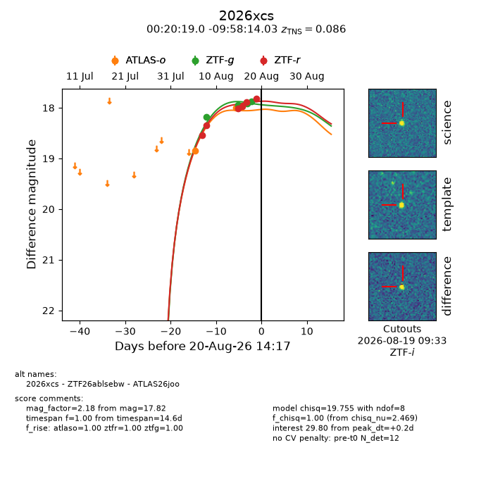
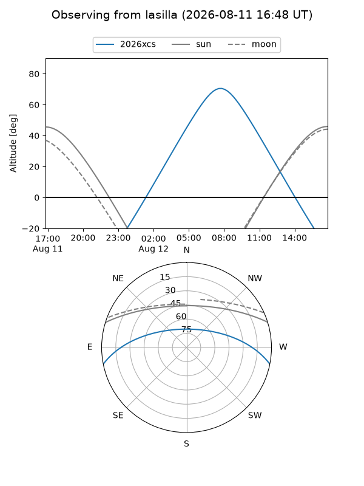
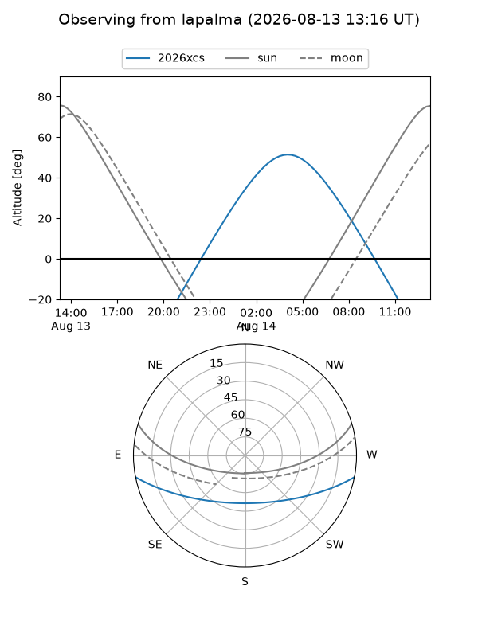
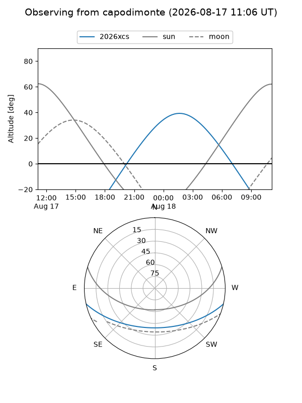
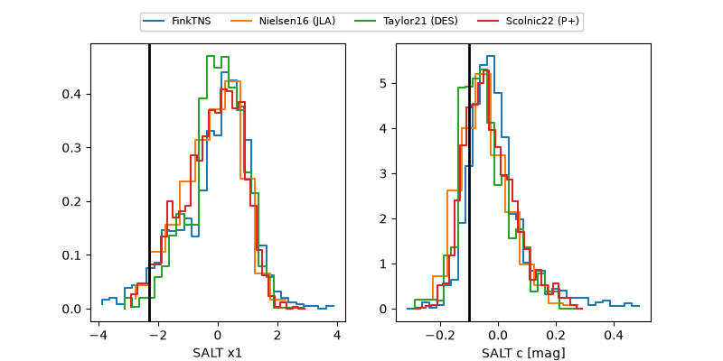

2026xcs
Target 2026xcs at 2026-08-20 14:20
Aliases and brokers:
FINK-ZTF: ztf.fink-portal.org/ZTF26ablsebw
Lasair-ZTF: lasair-ztf.lsst.ac.uk/objects/ZTF26ablsebw
ALeRCE-ZTF: alerce.online/object/ZTF26ablsebw
YSE-PZ: ziggy.ucolick.org/yse/transient_detail/2026xcs
TNS name: wis-tns.org/object/2026xcs
Direct TNS query: direct search
alt names
ZTF26ablsebw (ztf,fink_ztf)
2026xcs (tns,yse)
ATLAS26joo (atlas)
Coordinates:
equatorial (ra, dec) = 5.0793,-9.97056
equatorial (HMS+DMS) = 00:20:19.03,-09:58:14.03
galactic (l, b) = (98.3061,-71.33888)
Flags:
TNS type: SLSN-II
TNS redshift: 0.0860
peak dt: +0.2
Photometry:
last atlaso=18.00, ztfg=17.87, ztfr=17.82
2 atlaso, 4 ztfg, 6 ztfr detections
Lightcurve

Visibility



Additional plots
